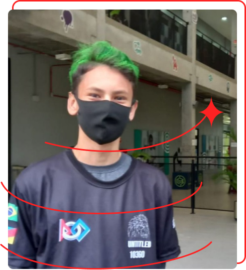

Currículo
Olá meu nome é Diego Müller, sou um estudante do ensino medio pela escola SESI, tenho contato com a programação a um tempo razoavel, participei de uma equipe de robotica como programador e planejo estudar front-end para conseguir me aprofundar mais nesta area que eu gosto
Experiências
SENAI (2022-2023) - Automação Industrial
Estudos
Transformaçao digital - Alura Cursos com certificado
HTML e CSS: Classes, posicionamentos e Flexbox - Alura Cursos com certificado
HTML e CSS: ambientes de desenvolvimento, estrutura de arquivos e tags - Alura Cursos com certificado
HTML e CSS: Cabeçalho, footer e variáveis CSS - Alura Cursos com certificado
Python (40horas) - Curso em vídeo com certificado
